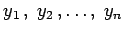
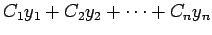
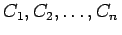
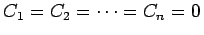
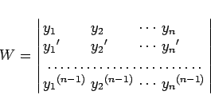
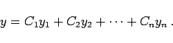

Inhalt Index DeskTop Bronstein

 Differentialgleichungen Gewöhnliche Differentialgleichungen Differentialgleichungen höherer Ordnung und Systeme von Differentialgleichungen Lineare Differentialgleichungen n-ter Ordnung
Differentialgleichungen Gewöhnliche Differentialgleichungen Differentialgleichungen höherer Ordnung und Systeme von Differentialgleichungen Lineare Differentialgleichungen n-ter Ordnung


Ein System von n Lösungen  einer homogenen linearen Differentialgleichung wird Fundamentalsystem genannt, falls diese Funktionen in dem betrachteten Intervall linear unabhängig sind, also ihre Linearkombination  für kein Wertesystem der , ausgenommen für , identisch verschwindet, d.h. für alle x-Werte in dem betreffenden Intervall.
Die Lösungen  einer linearen homogenen Differentialgleichung bilden genau dann ein Fundamentalsystem, wenn ihre WRONSKI-Determinante
einer linearen homogenen Differentialgleichung bilden genau dann ein Fundamentalsystem, wenn ihre WRONSKI-Determinante
|  | (9.34) |
von Null verschieden ist. Für jedes Lösungssystem einer homogenen linearen Differentialgleichung gilt die Formel von LIOUVILLE:
Aus dieser Gleichung folgt, daß die WRONSKI-Determinante nur identisch verschwinden kann. Das bedeutet: Die n Lösungen der homogenen linearen Differentialgleichung sind genau dann linear abhängig, wenn nur an einer einzigen Stelle x0 des betrachteten Intervalls W(x0) = 0 gilt. Wenn dagegen die Lösungen  ein Fundamentalsystem von Lösungen bilden, dann lautet die allgemeine Lösung der linearen homogenen Differentialgleichung (9.33)
ein Fundamentalsystem von Lösungen bilden, dann lautet die allgemeine Lösung der linearen homogenen Differentialgleichung (9.33)
|  | (9.36) |